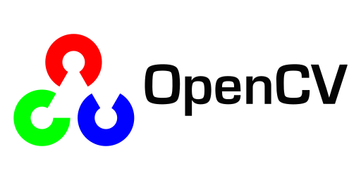

Welcome to my corner of the internet! This portfolio is where I collect the projects, tools, and ideas that are shaping my path towards becoming a system developer specialized in AI. I created it to give a clear view of what I build, how I think, and how I'm developing my skills, both through hands‑on projects and through my ongoing education. I’m currently studying to become an AI Developer, a program covering everything from Python development and database design to machine learning, data mining, web development, and applied AI. Alongside my studies, I’m now looking for real opportunities: freelance assignments, collaborations, and especially a LIA internship, where I can put my technical training to work in real projects.

Hey!
Want to discuss a project, collaboration, internship, or just compare which Python package
breaks most often?
Here’s where to find me:
Location: Ludvika or Stockholm, Sweden
Email: emil.sjoekvist@gmail.com
LinkedIn: linkedin.com/in/emil-sjokvist
GitHub: github.com/emilioano
Before stepping into AI development, I've built a strong foundation across ERP systems, integrations, IT infrastructure, logistics, and business processes. This background gives me a practical edge when working with technical solutions. I understand how systems behave in reality, not just in diagrams. I work as an ERP Application Specialist at a global technology leader in energy solutions, handling configuration, integrations, server administration, and support for global operations.
Now, through my AI Developer education, I’m expanding those foundations with modern tools and methods. The program includes: Advanced Python development, Database technology, Web application development, Applied AI: data mining, machine learning & deep learning, Agile development & cross‑disciplinary project work, 500 hours of LIA internship. This means I’m working hands‑on with data, automation, modeling, modern application development and real project workflows. A perfect combination with my previous ERP‑heavy experience.
../\\\\\\\\\\\\\..................................................................................................
.\/\\\/////////\\\.................................../\\\.........................................................
.\/\\\.......\/\\\..................................\///.................................../\\\...................
.\/\\\\\\\\\\\\\/.../\\/\\\\\\\....../\\\\\........../\\\...../\\\\\\\\....../\\\\\\\\../\\\\\\\\\\\../\\\\\\\\\\.
.\/\\\/////////....\/\\\/////\\\.../\\\///\\\.......\/\\\.../\\\/////\\\.../\\\//////..\////\\\////..\/\\\//////..
.\/\\\.............\/\\\...\///.../\\\..\//\\\......\/\\\../\\\\\\\\\\\.../\\\............\/\\\......\/\\\\\\\\\\.
.\/\\\.............\/\\\.........\//\\\../\\\.../\\.\/\\\.\//\\///////...\//\\\...........\/\\\./\\..\////////\\\.
.\/\\\.............\/\\\..........\///\\\\\/...\//\\\\\\...\//\\\\\\\\\\..\///\\\\\\\\....\//\\\\\..../\\\\\\\\\\.
.\///..............\///.............\/////......\//////.....\//////////.....\////////......\/////....\//////////..
Find out more about the projects I've been involved with so far. The containers below are showing the corresponding Readme-files on the Github repos, also links are provided!